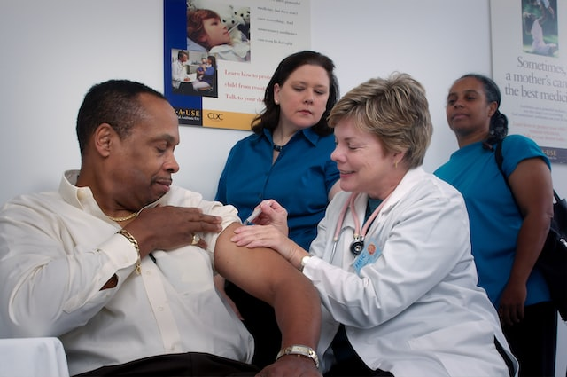
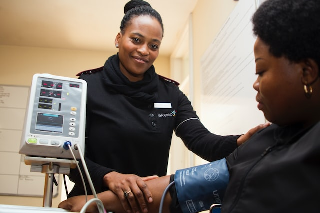
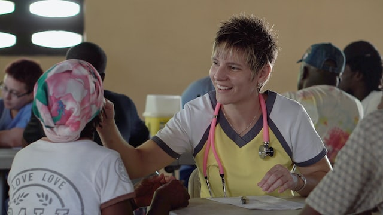
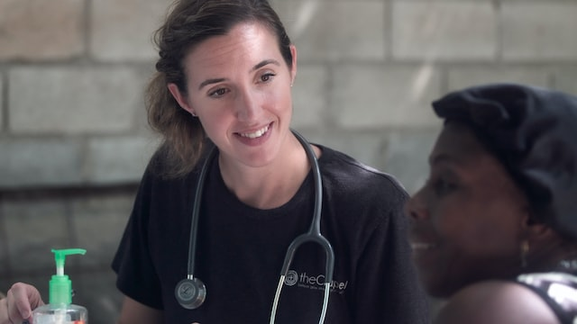
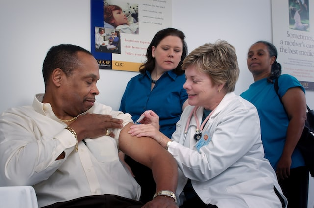
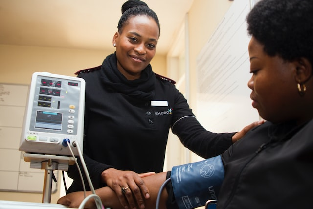
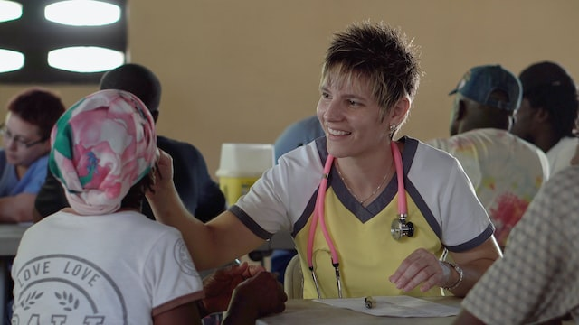
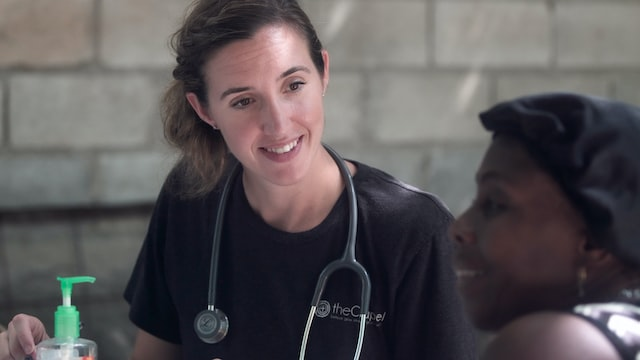

Nursing and Health Care
 







Our dedicated team of medical professionals, who come with over 30 years of experience as Doctors and Nurses handpick the candidates by assessing their experience and skills. We also ensure they are trained on the European/UK mdeical standards to make the candidates job ready in a new country from day 1. We have partnered with large scale charity homes and medical training institues across India and Srilanka to provide interim training before the candidates land in UK. This is to ensure that the highest quality of practices are followed by candidates reffered by Siris Consulting.
We have an established extensive network of temporary consultants trained on our principles, to handpick the candidates from both hospitals and educational institutes across south Asian countires. Who will further be screened by our permanent consultants with medical expereince. This is to ensure we deliver high quality candidates at scale, and in shortest possible time.